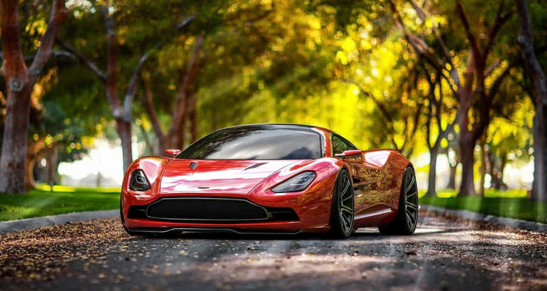
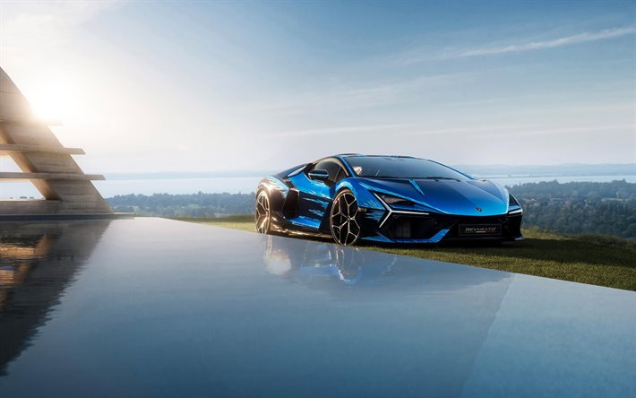
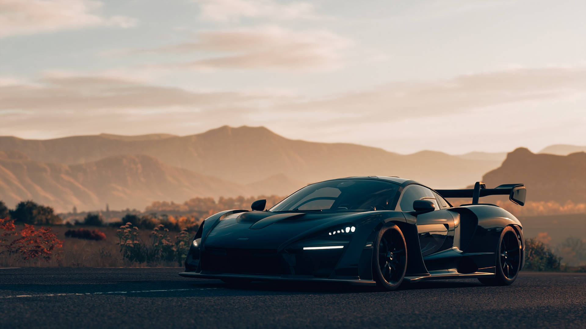
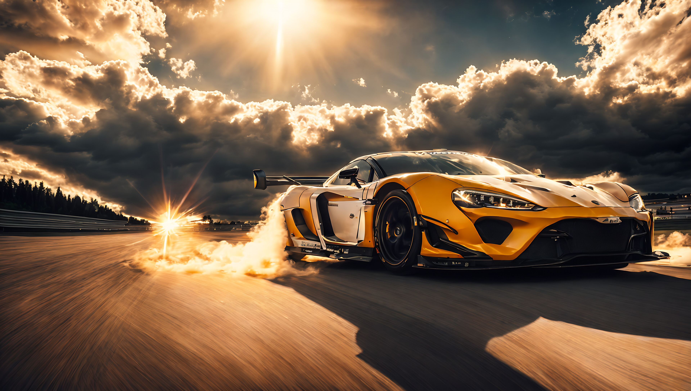
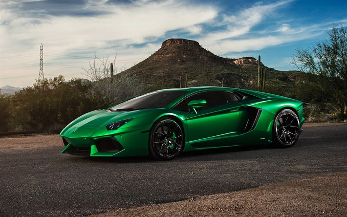

Os carros esportivos são conhecidos por sua velocidade e design moderno, sendo um dos principais símbolos de inovação no mundo automotivo. Eles combinam tecnologia avançada com desempenho elevado, proporcionando uma experiência única para os motoristas.
Nesta página, você pode visualizar diferentes modelos de carros esportivos, além de assistir a um vídeo e ouvir um áudio relacionado ao tema, tornando a navegação mais interativa e completa.




